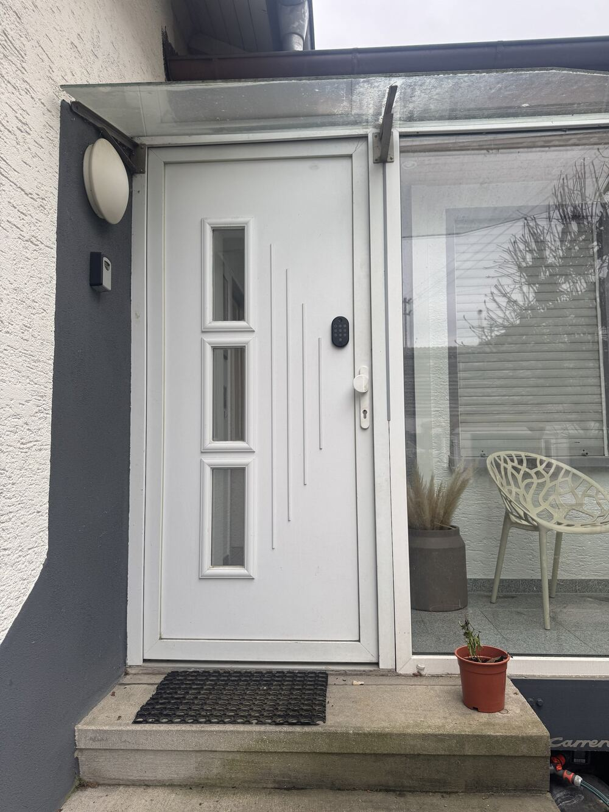
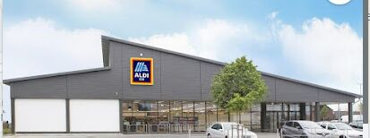

Fühlt euch bitte wie zu Hause! Wir wollen, dass ihr einen super Aufenthalt bei uns habt. Deshalb haben wir hier die wichtigsten Infos zusammengetragen. Bei Fragen oder Anregungen meldet euch jederzeit – viel Spaß in Fellbach!
Anita & Johannes
📄 Als PDF herunterladenAnkommen & Check-in
Das Appartement liegt im Hinterhaus (Bruckstraße 22/1). Zufahrt, Parkplatz und Eingang erreicht ihr von hinten über den Bruckwiesenweg – nicht über die Bruckstraße.
📍 Navi-Ziel: BruckwiesenwegSo findet ihr hin
- Über die Bruckstraße fahren und an der Ecke mit dem roten Haus (Restaurant Da Patrizia) in den Bruckwiesenweg einbiegen.

Anfahrt: Bruckstraße (oben) → Bruckwiesenweg → Parkplatz (rote Linie) - Dem Bruckwiesenweg folgen, bis er nach links abknickt. Nach dem Knick seht ihr links das rote Gebäude mit zwei weißen Garagentoren. Parken: Euer Auto stellt ihr auf die gepflasterte Fläche vor das linke Tor der Doppelgarage (neben dem Wohnmobil) – dieses Tor dürft ihr komplett zuparken. Das rechte Garagentor muss bitte immer frei bleiben.

Bruckwiesenweg: rotes Gebäude mit zwei weißen Garagen - Rechts neben den Garagen ist ein Metalltor mit Überdachung.

Das Tor rechts neben den Garagen - Das Metalltor ist offen – einfach hindurchgehen. Weiter geht es zu Fuß über den gepflasterten Weg am weißen Haus entlang, vorbei an den Hochbeeten, bis zur weißen Haustür mit den Stufen und dem Glasvordach.

Fußweg am Haus entlang zur Haustür 
Die weiße Haustür mit Glasvordach - Rechts oben an der Haustür sitzt das Yale-Tastenfeld: Tastenfeld berühren, damit es aufleuchtet → euren persönlichen Code eingeben → mit dem grünen ✓ bestätigen → Türgriff drücken. Den Code findet ihr in der Airbnb-App unter eurer Reise (Check-in-Anleitung); er gilt nur während eurer Buchung.

Yale-Tastenfeld: Code eingeben, mit ✓ bestätigen - Im Flur geradeaus ist die Tür mit dem Schild „Air BnB“ – das ist euer Appartement. Der Schlüssel steckt bei eurer Ankunft im Schloss.

Im Flur: Tür „Air BnB“


Überblick von oben

Mit Bus & Bahn: siehe Bus & Bahn. Von der Haltestelle Cannstatter Platz sind es nur wenige Minuten zu Fuß.
WLAN
Die Wohnung & Hausregeln
- Rauchen ist im gesamten Appartement verboten.
- Keine Partys oder Veranstaltungen.
- Nachtruhe von 22 bis 7 Uhr – bitte auch im Hof und auf dem Weg zum Parkplatz leise sein.
Gut zu wissen
- Heizung & Lüften: Die Heizkörper regelt ihr am Thermostat (Stufe 3 ≈ 20 °C). Im Winter bitte kurz und kräftig lüften (Fenster 5 Minuten ganz öffnen) statt dauerhaft kippen.
- Kaffee: Für euren Morgenkaffee steht eine Senseo-Maschine bereit. Ein paar Pads zum Start legen wir euch meist hin – für längere Aufenthalte nehmt euch am besten eine Packung beim Einkaufen mit (gibt es in jedem Supermarkt).
- Müll: Euren Müll könnt ihr bei der Abreise einfach in der Wohnung lassen – wir kümmern uns darum.
- Sonntags haben in Deutschland alle Supermärkte geschlossen – am besten samstags einkaufen.
Einkaufen, Bäcker & Essen
★ = Google-Bewertung (Anzahl Rezensionen) aus unserer Recherche – aktuelle Werte und Öffnungszeiten seht ihr über „Karte“. Entfernungen ab dem Appartement.
Supermärkte & Drogerie



Bäckereien

Essen & Trinken


Unsere Tipps – passend für euch
Für Familien
Einer der schönsten Zoos Deutschlands, mit vielen Tierhäusern und Gewächshäusern – auch bei Kälte und Regen ein toller Tag.
Hallenbad mit Rutschen, Sauna und der im Sommer 2026 neu eröffneten Dschungelwelt für die Kleinsten. Das Freibad ist im Winter geschlossen.
Flacher, barrierefreier Rundweg (ca. 4 km) durch die Weinberge – mit Kinderwagen gut machbar, mit Blick über Fellbach.
130 Jahre Autogeschichte auf neun Etagen – auch für Kinder spannend und ideal für Regentage.
Ganz in der Nähe: Da Patrizia (★ 4,5) direkt nebenan und die Trattoria Pane e Pino (★ 4,7) ca. 150 m – Pizza & Pasta mögen auch die Kleinen.
Für Pärchen
Der Weinweg (ca. 4,3 km) startet an der Neuen Kelter der Fellbacher Weingärtner (Kappelbergstraße 48) und führt durch die Reben zum Aussichtspunkt „Blick über Fellbach“. Jeden ersten Samstag im Monat gibt es dort eine offene Weinprobe.
Die klassizistische Kapelle über den Weinbergen bietet einen der schönsten Ausblicke ins Neckartal. Die Kapelle selbst ist von November bis März geschlossen – der Spaziergang und die Aussicht lohnen sich aber das ganze Jahr.
Warmes Mineralwasser in Innen- und Außenbecken plus Sauna – gerade im Winter herrlich entspannend.
Trattoria Pane e Pino (★ 4,7), Irodion (★ 4,6, griechisch, jetzt in der historischen Alten Kelter) oder ganz bequem direkt nebenan bei Da Patrizia (★ 4,5).
Esslingen mit Fachwerk-Altstadt und Burg (ca. 20 Min.) oder das Residenzschloss Ludwigsburg, eines der größten Barockschlösser Deutschlands (ca. 25 Min., im Winter mit Führungen).
Für Allein- & Geschäftsreisende
Vom Bahnhof Fellbach fahrt ihr mit der S2 oder S3 in ca. 12–15 Minuten zum Stuttgarter Hauptbahnhof – Schlossplatz, Königstraße, Markthalle und Staatsgalerie sind dann zu Fuß erreichbar.
Zwei Pflichtbesuche für Auto-Fans, beide gut in 2–3 Stunden zu erkunden. Beide sind montags geschlossen; das Porsche Museum zusätzlich vom 18.01. bis 01.02.2027 wegen Renovierung.
Der erste Fernsehturm der Welt in Stahlbetonbauweise – auch nach Feierabend: täglich 10–22 Uhr, letzter Einlass 21:30 Uhr.
Rundtour über den Kappelberg durch Wein und Wald zum Aussichtsturm – ca. 13,7 km, rund 4 Stunden. Im Winter früh starten (ab ca. 17 Uhr ist es dunkel) und auf Glätte im Wald achten.
Maultaschen und Kässpätzle im Wirthshaus Zum Kuckuck (★ 4,4, 747 Bewertungen) – gemütlich, auch allein.
Veranstaltungen in Fellbach & Umgebung
Stand: 22.11.2026 · Termine ohne Gewähr – bitte vorher beim Veranstalter prüfen.
- 28.11.–22.12.2026Märchenhafter Fellbacher Weihnachtsmarkt
Rund um Lutherkirche und Rathaus, mit Bühnenprogramm und Angeboten für Kinder. Mo–Mi 16–20 Uhr, Do–So 12–20 Uhr, Eintritt frei (Ende voraussichtlich 22.12.).Fellbach Innenstadt - 25.11.–23.12.2026Stuttgarter Weihnachtsmarkt
Einer der ältesten und größten Weihnachtsmärkte Europas mit rund 250 Ständen. So–Do 11–21 Uhr, Fr & Sa 11–22 Uhr.Stuttgart Innenstadt · S-Bahn ca. 15 Min. - 24.11.–22.12.2026Esslinger Mittelalter- & Weihnachtsmarkt
So–Do 11–20:30 Uhr, Fr & Sa 11–21:30 Uhr.Esslingen am Neckar · ca. 20 Min. - 24.11.–22.12.2026Ludwigsburger Barock-Weihnachtsmarkt
Rund 150 Stände vor barocker Kulisse, täglich 11–21 Uhr.Ludwigsburg · ca. 25 Min. - bis Anfang/Mitte Jan. 2027Christmas Garden in der Wilhelma
Lichterpfad durch den historischen Park, abends. Tickets vorab online (christmas-garden.de).Stuttgart-Bad Cannstatt - jeden 1. SamstagOffene Weinprobe der Fellbacher Weingärtner
Nächste Termine: 05.12.2026, 02.01., 06.02. und 06.03.2027.Neue Kelter, Kappelbergstraße 48, Fellbach - 20.01.2027 · 20 Uhr„Huckleberry Finn“ mit Herbert KnaupSchwabenlandhalle Fellbach
- 07.02.2027 · 19 UhrSchwanensee – Grand Classic BalletSchwabenlandhalle Fellbach
- 20./21.02.202729. Weintreff „Die Besten aus dem Remstal“
Rund 50 Weingüter an einem Wochenende.Alte Kelter, Kelterweg 7, Fellbach - 13.03.2027 · 20 UhrAzzurro – Die Italo-Pop-RevueSchwabenlandhalle Fellbach
- 20.03.2027Bobby & Max – Live-Hörspiel für Kinder (13 & 18 Uhr)Schwabenlandhalle Fellbach
Unterwegs mit Bus & Bahn
- Bus: Haltestelle Fellbach Cannstatter Platz (wenige Minuten zu Fuß) – Busse u. a. zum Bahnhof.
- S-Bahn: Fellbach Bahnhof – S2 und S3 nach Stuttgart Hbf (ca. 12–15 Min.), Flughafen/Messe und Richtung Schorndorf bzw. Backnang. Die bequemste Verbindung nach Stuttgart.
- Stadtbahn U1: Wegen Umbau endet die U1 ab 13.12.2026 an der Haltestelle Fellbach Schwabenlandhalle. Voraussichtlich von März bis Juli 2027 fahren statt der U1 Ersatzbusse bis Bad Cannstatt.
Fahrpläne und Tickets in der App VVS oder DB Navigator – dort seht ihr auch aktuelle Baustellen. Das Deutschlandticket gilt im gesamten Nahverkehr.
🚗 Stuttgart ist Umweltzone: Mit dem Auto braucht ihr eine grüne Plakette.
Fahrplanauskunft VVS ↗
Abreise
Check-out bis 11:00 Uhr. Bevor ihr geht, bitte kurz:
Wir hoffen, ihr hattet eine schöne Zeit! Über eine Bewertung auf Airbnb freuen wir uns sehr. ⭐
Kontakt & Notfall
Bei Fragen erreicht ihr uns am schnellsten über die Airbnb-App oder telefonisch:
Notrufnummern
- Feuerwehr & Rettungsdienst: 112
- Polizei: 110
- Ärztlicher Bereitschaftsdienst: 116 117
- Notdienst-Apotheke: aponet.de – Notdienstsuche